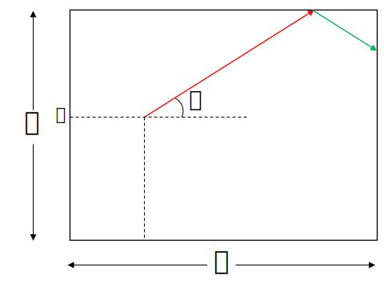
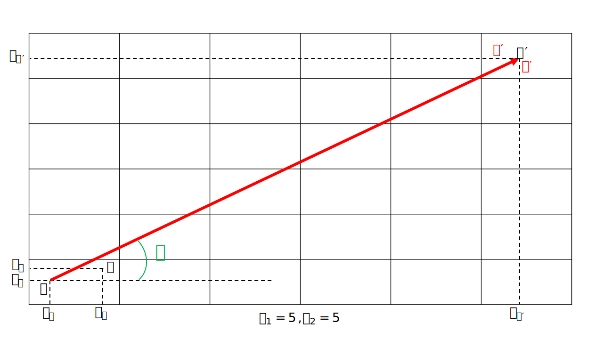

Reflection in mirrored box
Definition
Imagine a 2-D rectangular box with all sides mirroed.
A 1-D light source directing with angle \( \alpha \) from the horizontal axis at point S with (\( x_{S} \) , \( y_{S} \)) coordinates
spreads and hit the horizontal walls \( n_{1} \) and vertical walls \( n_{2} \) times and then reaches the point O with (\( x_{O} \) , \( y_{O} \)) coordinates.
Problem: determine \( \alpha \).

The fist thing that should be discussed is the rule of refleciton. we know that the angle of the light with the the Perpendicular of the surface at the hitting point is equal to it's refleciton.

By using this rule we will find a way to determine \( \alpha \). First imagine the first reflection of the light. it will be nearly like this figure below.
Let us just continue the first line till it hits the vertical wall like the figure below.

Both green lines starting point and angle from the horizontal axis are equal, thus their lenght will be equal and their hittion point will have equal distnace from horizontal wall. the upper point is the image of the other one.

This is the important point of our method, to use the images of the hitting points. By continuing this with other reflections we will have this figure.

Now what we've got is a straight line from point S to O'. let O' coordinates be (\( x_{O'} \) , \( y_{O'} \)).
With every refleciton point O will be imaged in the new rectangle, so after \( n_{1} \) reflections with vertical walls O will be \( n_{1} \) times imaged vertically. Like vertical walls it will be \( n_{2} \) times imaged horizontally.
then O' coordinates from the edge point of it's rectangle will be:
\[
x^{\prime} =
\begin{cases}
x_{O} ,& \text{if } n_{1} \text{ is even} \\
b - x_{O},& \text{otherwise}
\end{cases}
\]
\[
y^{\prime} =
\begin{cases}
y_{O} ,& \text{if } n_{2} \text{ is even} \\
a - y_{O},& \text{otherwise}
\end{cases}
\]
Then O' coordinates are:
\[
x_{O'} =
\begin{cases}
n_{1} \times b + x_{O} ,& \text{if } n_{1} \text{ is even} \\
(n_{1} + 1) \times b - x_{O} ,& \text{otherwise}
\end{cases}
\]
\[
y_{O'} =
\begin{cases}
n_{2} \times a + y_{O} ,& \text{if } n_{2} \text{ is even} \\
(n_{2} + 1) \times a - y_{O} ,& \text{otherwise}
\end{cases}
\]
And finally we can determine the angle \( \alpha \) by using the slope of the line.
\[
\tan{\alpha} = \frac{y_{O'} - y_{S}}{x_{O'} - x_{S}}
\]
\[
\tan{\alpha} =
\begin{cases}
\frac{n_{2} \times a + y_{O} - y_{S}}{n_{1} \times b + x_{O} - x_{S}},& \text{if } n_{1} \text{ is even and } n_{2} \text{ is even} \\ \\
\frac{(n_{2} + 1) \times a - y_{O} - y_{S}}{n_{1} \times b + x_{O} - x_{S}},& \text{if } n_{1} \text{ is even and } n_{2} \text{ is odd} \\ \\
\frac{n_{2} \times a + y_{O} - y_{S}}{(n_{1} + 1) \times b - x_{O} - x_{S}},& \text{if } n_{1} \text{ is odd and } n_{2} \text{ is even} \\ \\
\frac{(n_{2} + 1) \times a - y_{O} - y_{S}}{(n_{1} + 1) \times b - x_{O} - x_{S}},& \text{if } n_{1} \text{ is odd and } n_{2} \text{ is odd}
\end{cases}
\]